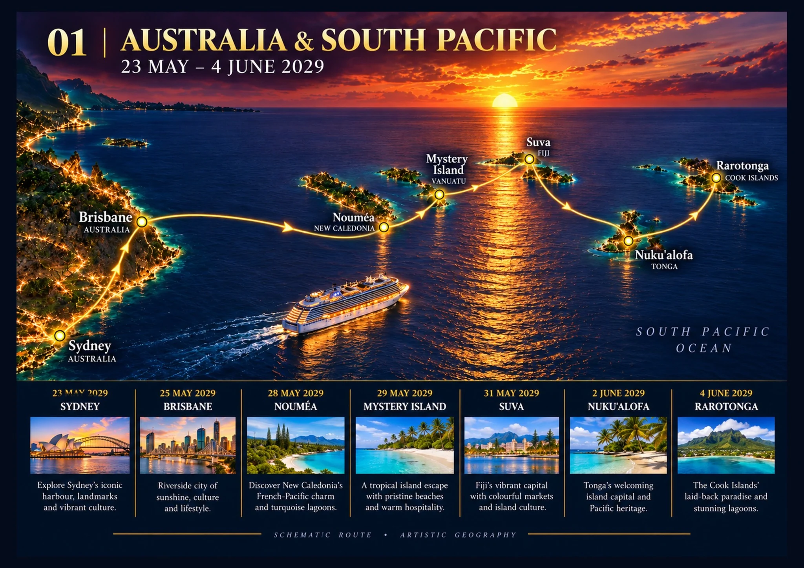

Brisbane, Australia
Brisbane is the last easy Australian stop before the Pacific crossing. The river, South Bank and city streets provide plenty to look at without organising a full tour.
The easy plan
Wander around town, stop for lunch and coffee, and return aboard without an organised excursion. We have already seen enough Brisbane to know that a pricey coach tour would be unnecessary. South Bank, the river ferries, the City Botanic Gardens and a decent café give us choices without a timetable. A short ride into the centre should be enough, followed by a leisurely lunch and a waterfront wander. If the weather turns ordinary, a café with river views is a perfectly acceptable substitute for a grand sightseeing expedition. The only real priority is leaving a comfortable margin to get back to the cruise terminal.
Late May: usually mild and fairly dry, around 12–23°C; evenings can be cool.
The river snakes through Brisbane so thoroughly that the city can sometimes feel like one long detour to the opposite bank.
Aussies let loose in a foreign country. What could possibly go wrong? The plan is simple. Get off the ship, look at some old buildings, photograph something impressive, find lunch and get back before they sail without us. Anything beyond that is a bonus. Our photos and the full, unfiltered account of the day's adventures will be added right here once we've actually been there.


.jpg)

.jpg)


.jpg)


.jpg)